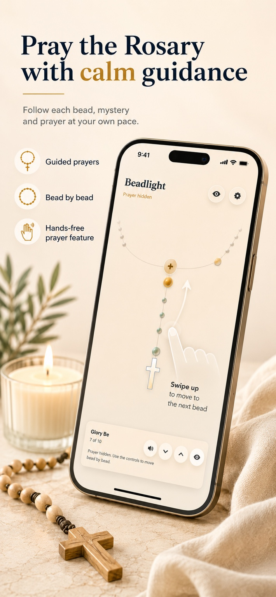
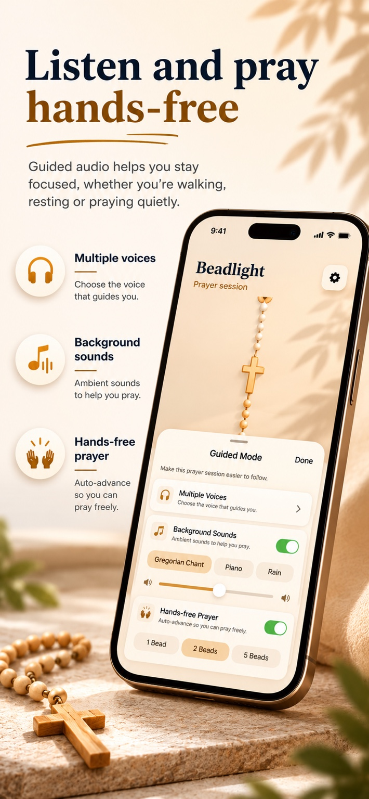
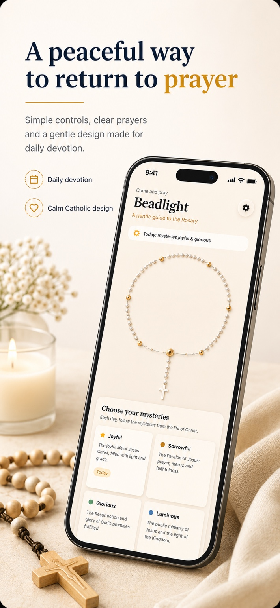
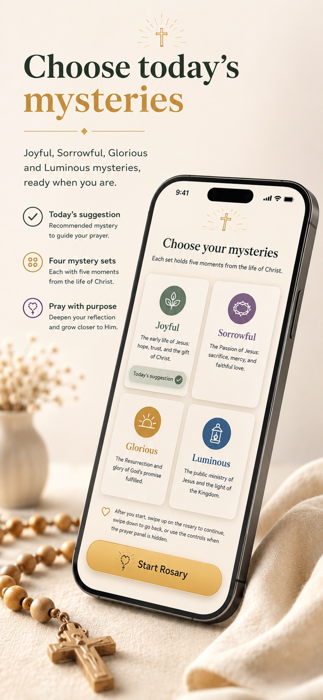
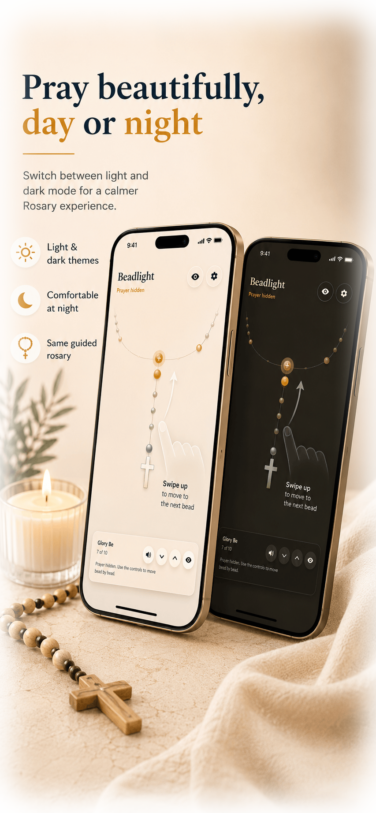

Guided Prayer
Follow the Rosary step by step without losing your place.
Rosary prayer companion
BeadLight helps you choose your mysteries, follow each bead, and stay focused in prayer with a simple guided Rosary experience — now with a softer light and dark mode design.





Follow the Rosary step by step without losing your place.
Choose Joyful, Luminous, Sorrowful, or Glorious mysteries.
Pray comfortably in the morning, during the day, or quietly at night.
View the public roadmap and see what is coming next.
BeadLight has transformed the way I pray the Rosary. It helps me stay focused and present in every mystery. Sarah, London
Why Beadlight?
Beadlight is made for people who want a gentle way to pray the Rosary without unnecessary noise. Open the app, choose your mystery, and begin.
It is especially useful when you want structure, audio guidance, or a clearer way to move through the prayers at your own pace.
How it works
BeadLight keeps the Rosary sequence clear without turning prayer into a busy interface. The app gives you structure when you need it and quietly gets out of the way when you do not.

Product roadmap
BeadLight is still growing. The public roadmap shows ideas under consideration, planned features, items in progress, released work, and things not currently planned.
View roadmapStart praying
A peaceful Rosary companion for focused prayer.